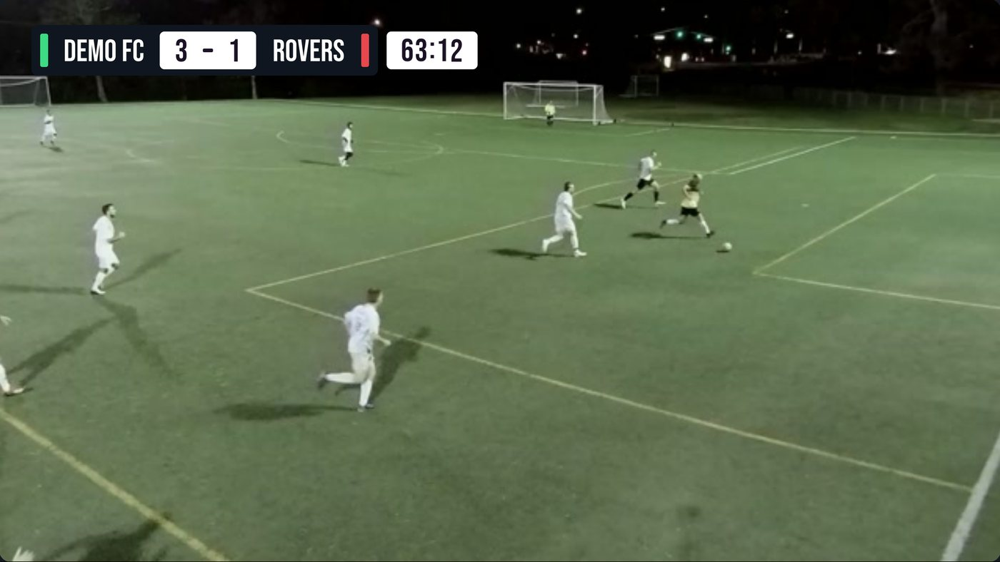
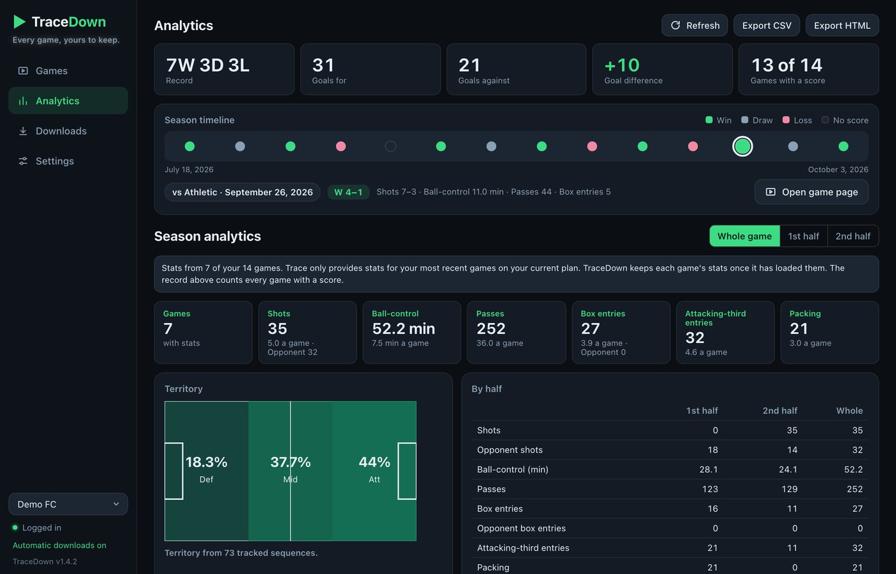

Every game, yours to keep.
Save your team's Trace games, highlights and stats to your own computer.
A free app for Mac and Windows. Log in with your own Trace account, and your games are yours for good.
Windows 10 or 11 · Mac with Apple Silicon (M1 or newer).
Older Intel Mac? Download the Intel version.
TraceDown runs on a Mac or Windows computer. Open this page there to download it.
What it does
Full games, one video
Both halves joined into a single 1080p MP4, with no quality loss.
Highlights
Every shot as a clip, plus a team highlight reel.
Player recaps
Each player's follow-camera recap, one or all at once.
A page for every game
Watch at any speed, and jump to any shot on a timeline.
Stats and heat maps
For each game and across the whole season.
Automatic downloads
New games saved for you as they appear.
Game Editor
Cut out the breaks and add a score bug with a running clock.
Downloads that resume
Lose your connection and it carries on where it stopped.
Bookmarks and clips
Note any moment, and cut clips of your own.

The Editor adds a score bug and clock to your game.

Season stats, kept even after Trace stops showing them.
How to install
Windows
- Click Download for Windows and open the file.
- If Windows shows a blue warning, click More info, then Run anyway.
- Click Next, Install, Finish, then open TraceDown from your desktop.
Mac
- Click Download for Mac and open the zip file.
- Drag TraceDown into your Applications folder.
- Open it. The first time, it downloads its video engine (about 170 MB).
Then, on either
- Click Add account.
- Log in with your Trace email and the code texted to your phone.
- Your games appear. Click Full Game on any of them.